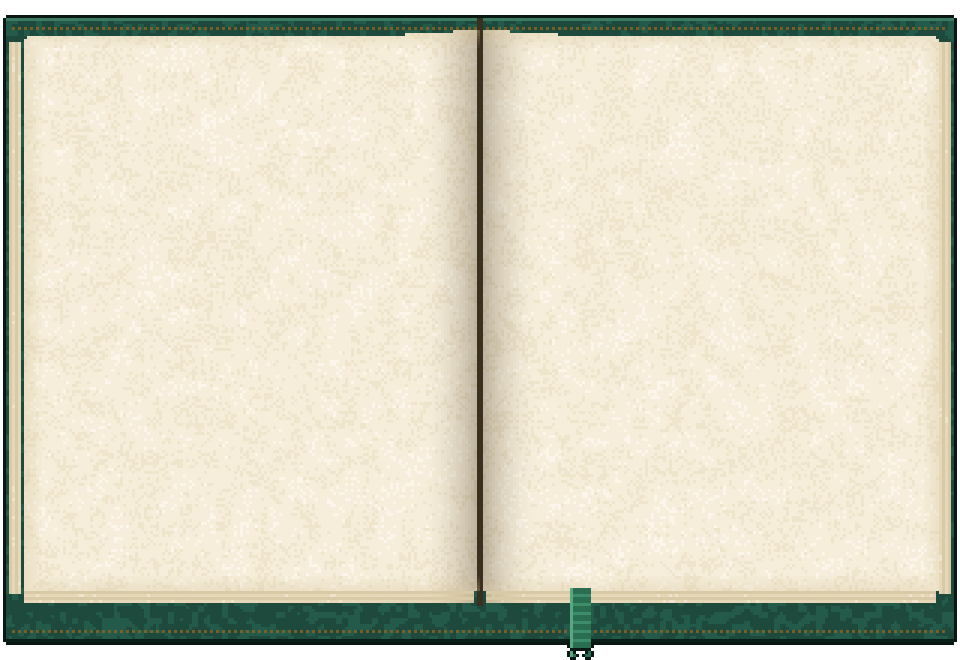
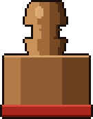

Orto QuestõesOrtoQuestões Simulados · Errata
Orto QuestõesOrtoQuestões Simulados · Errata
Errata nº 1 · metástases ósseas
Mama é
blástica
ou lítica?
Depende da edição do Campbell. O mesmo parágrafo aparece em três edições, e uma palavra mudou.
Escolha a sua letra:
a resposta sai no story 4.
Campbell13ªedição
Campbell14ªedição
Campbell15ªedição
Sobre o aspecto radiográfico das metástases ósseas, segundo o Campbell, é correto:
Aas metástases de rim e tireoide são tipicamente blásticas
Bmama e próstata produzem tipicamente lesões blásticas; rim e tireoide, lesões puramente líticas; o pulmão, aspecto misto; lesão distal ao cotovelo ou ao joelho sugere pulmão, que pode deixar a imagem de uma 'mordida' na cortical
Cas metástases acrais vêm sobretudo da mama
Do aspecto radiográfico permite descartar metástase quando a lesão é blástica
Orto QuestõesLição 1 · lítica ou blástica
Antes da tabela, o porquê
O tumor desequilibra o osso.
O osso se refaz o tempo todo: os osteoclastos tiram, os osteoblastos repõem. A metástase desacopla esse par.
tira
repõe
tira
repõe
Lítica
A reabsorção vence: o osso some e fica a falha escura.
Blástica
Forma osso denso, mas frágil, que também fratura.
a lesão
→
Fonte: Campbell's Operative Orthopaedics, 15ª ed., cap. 29, Fig. 29.28 A e B, p. 994: metástase de pulmão na tíbia proximal (A, radiografia; B, ressonância). Mecanismo: Rockwood and Green's, 10ª ed., cap. 25.
Orto QuestõesLição 2 · a errata
O mesmo parágrafo, duas edições
Só uma palavra mudou:
a da mama.
13ª ed. (cap. 27, p. 966): igual à 14ª

Campbell · 14ª ed. · cap. 27p. 1028
O aspecto radiográfico
- Próstata
- tipicamente blástica
- Mama
- tipicamente blástica‸ lítica (15ª)
- Rim e tireoide
- em geral puramente líticos
- Pulmão
- misto
Campbell · 15ª ed. · cap. 29p. 990
O aspecto radiográfico
- Próstata
- pode dar os três padrões; tipicamente blástica
- Mama
- pode dar os três padrões; tipicamente lítica
- Rim e tireoide
- em geral puramente líticos
- Pulmão
- misto
o resto: igual nas três edições ✓
Rockwood 10ª, cap. 25: a mama pode ser lítica ou blástica
A regra que vale em qualquer edição
Rim e tireoide
lítica pura
Campbell 14ª ed., cap. 27, p. 1028 · 15ª ed., cap. 29, p. 990 · 13ª ed., cap. 27, p. 966 · Rockwood and Green's, 10ª ed., cap. 25
Orto QuestõesLição 3 · a resposta

Resposta B
mama e próstata produzem tipicamente lesões blásticas; rim e tireoide, lesões puramente líticas; o pulmão, aspecto misto; lesão distal ao cotovelo ou ao joelho sugere pulmão, que pode deixar a imagem de uma 'mordida' na cortical
É a transcrição do Campbell 14ª ed. (cap. 27, p. 1028 e 1029), igual à 13ª. Na 15ª ed. (cap. 29, p. 990), só a mama mudou: virou tipicamente lítica. O resto continua igual.
ARim e tireoide são puramente líticos nas três edições. Por isso a cintilografia pode falhar no carcinoma renal.
CLesão distal ao cotovelo ou ao joelho: o primário mais provável é o pulmão, não a mama.
DBlástica não descarta: a próstata é tipicamente blástica, e o osso blástico também fratura.
Abaixo do joelho?
Pense em pulmão.
RM: pulmão na tíbia
Distal ao cotovelo ou ao joelho, o pulmão é o primário mais provável e pode deixar uma 'mordida' na cortical.
Por que o padrão importa
Pontos no escore de MIRELS:
Lítica
Mista
Blástica
O osso lítico perde resistência mais depressa.
Campbell 14ª ed., cap. 27, p. 1028 e 1029 e Tabela 27.1 · Rockwood and Green's, 10ª ed., cap. 25